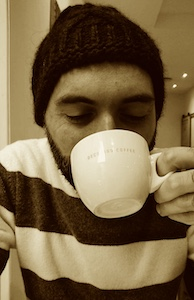
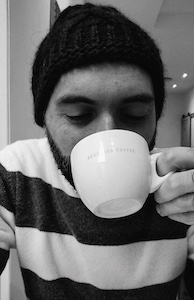

ANDREA G. FORTE
===================


Andrea is the founder and CEO of Cyph, a new powerful technology that adds an extra layer of security to protect businesses and their customers against the most sophisticated of cyber attacks (e.g., Phishing attacks, Man-in-the-middle attacks, SIM swaps) while providing a very intuitive visual user experience. With Cyph, users are back in control of their online transactions, services and personal information regardless of where it is stored.
Before entering the startup world, Andrea was a Principal Member of Technical Staff at the AT&T Security Research Center. His research focused on different topics including applied cryptography, destructive malware, ransomware, mobility in wireless networks, software defined networking, IP Multimedia Subsystem, next-generation cellular networks and Internet of Things. Prior to AT&T, Andrea worked as a Research Associate in the Department of Computer Science at Columbia University in Prof. Henning Schulzrinne's Internet Real-time Laboratory where he researched wireless networks, real-time media, fast handoffs and signaling compression for low bandwidth channels. Andrea has served on a number of conference and journal steering committees, contributed to various standards bodies and holds numerous publications and patents.
Additional biographical information can be found on my LinkedIn page.
Encrypted Riddle [Cyph Mobile (iOS)]
----------------
![Cyph Riddle [picture]](images/riddle3.png "Email me the solution...")
My "Serious" Websites
---------------------
Cyph
Columbia University (old)
Email
------
Other Contacts
---------------


--
Copyright © 2020, Andrea G. Forte. All rights reserved.